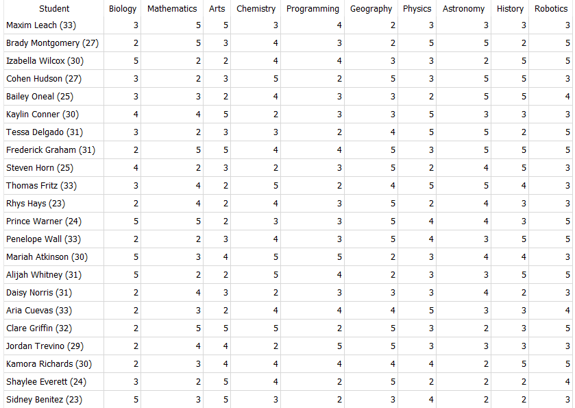
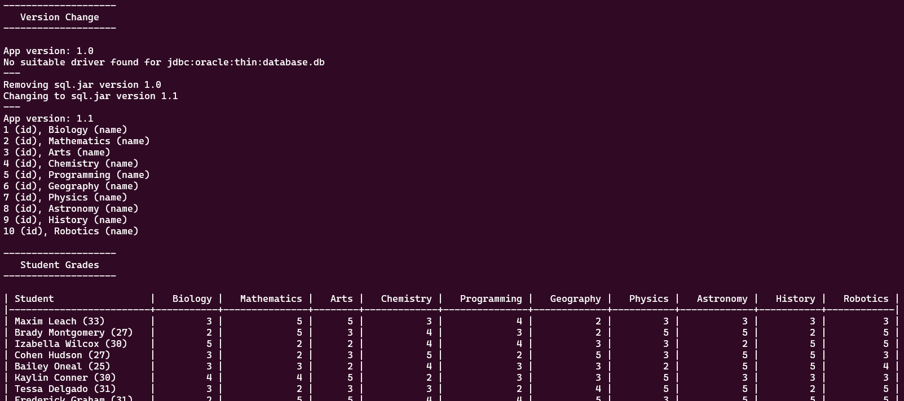

Task 1 - Student grades
This task is in 2 parts, where in the first part you have to change the sql.jar version from version 1.0 (broken) to version 1.1 in order to be able to query the database.
Second part consists of querying the database and parsing the results.
You can write your application in what ever language you want but our preferred languages are: Java, Python, C# and Bash. The application can be console based but GUI solution is always great to see!
Your application must send the commands to the docker container (and receive) via SSH protocol (username: root, password: sshpass1)
Your application must complete both parts in a single execution and display the results, and your code should be logically structured and reasonably commented. In addition, any dependencies or steps needed to run your application must be documented.
Note: Docker container is already configured and running in reviewer's PC and is listening port 2222 for SSH connections, you don't have to include any Docker liveness checks or setup in your application.
Part 1: SQL.jar version change
Send necessary bash commands via SSH to change and verify the version and functionality of the sql.jar
- Check the version and error of the current
sql.jar, command line arguments:-versionand-query "sql query" - Remove
sql.jar - Copy and decompress
sql.jar.zstfromversions/folder - Verify the version and functionality of
sql.jaragain
I used "select * from classes" SQL query in my example but it doesn't have to be that. (database structure)
Output should look something like this:
App version: 1.0
No suitable driver found for jdbc:oracle:thin:database.db
---
Removing sql.jar version 1.0
Changing to sql.jar version 1.1
---
App version: 1.1
1 (id), Biology (name)
2 (id), Mathematics (name)
3 (id), Arts (name)
4 (id), Chemistry (name)
5 (id), Programming (name)
6 (id), Geography (name)
7 (id), Physics (name)
8 (id), Astronomy (name)
9 (id), History (name)
10 (id), Robotics (name)
Part 2: Query DB and parse the results
- Use
sql.jarto query the DB (with-query "sql query"command line argument) - Parse the output (remove unnecessary brackets)
- Display the result in a formatted table
Table needs to have student names from students table in the first column with their age in brackets next to the name, other columns are class names from classes table with corresponding grades from grades table as row values, like this:

Completed app
When you made a console based app, the completed app should output something like this:

GUI based app should still show all this info but presentation is more up to you.
Brownie points
Some ideas to consider, not strictly necessary but will definitely show what you've got! 💪
- Think about exceptions, what happens when your application fails to connect with the SSH server? (you can simulate that scenario by stopping the docker container)
- Implement a solution in version change task that will not change the version if sql.jar is already on version 1.1